A metronome produces pulses of regular duration that can be
adjusted by shifting a weight on the oscillating
rod. Oscillators play a very important role in the theory of
dynamical systems, as study cases for linear systems.
9.1. Linear systems in the phase plane
A dynamic system with two state variables is defined by two
evolution equations with the general
form 7.2
introduced in Chapter 7:
(9.1)
It is said that the system is linear when the two functions
and
are linear combinations of the state variables:
(9.2)
where
,
,
and
are four
constants.
The two evolution equations can be written more compactly
using matrices:
(9.3)
The equilibrium points can be found by equating the term
in the right of equation 9.3
to a matrix with zeros in the two lines, giving a
homogeneous system of linear equations. A homogeneous system
of linear equations always has at least one solution, called
the trivial one, in which all variables are null. In some
cases, when the determinant of the system matrix is zero,
there are an infinite number of solutions. Therefore, if the
determinant of the matrix
is nonzero, the dynamical
system has a single equilibrium point:
, located
at the origin of the phase space. In cases where the
determinant of the matrix
is zero, the derivatives
of the two state variables are the same function, multiplied
by a constant, and the system can be reduced to a linear
system with a single state variable and a single equilibrium
point at the origin.
When the evolution equations are linear combinations of the
state variables plus a constant, the equilibrium point is no
longer the origin of the phase space but it is possible to
obtain a linear system by means of a change of variables,
which corresponds to moving the origin to the equilibrium
point, as done in the following example.
Example 9.1
The heat transfer equations which determine the
temperatures
and
in two rooms of a house, are
the following:
where the temperatures are measured in degrees Celsius
and the time in hours. The outside temperature is
8 °C. The terms
and
represent the heat coming from each room to the exterior
per unit of time, divided by the heat capacities of each
room. The term
is related to the heat
passing from one room to the other and the constant term 2
is due to the fact that in the first room a heater is
providing a constant amount of heat every hour. Determine
the temperatures of the two rooms once they reach constant
values and rewrite the system as a linear one.
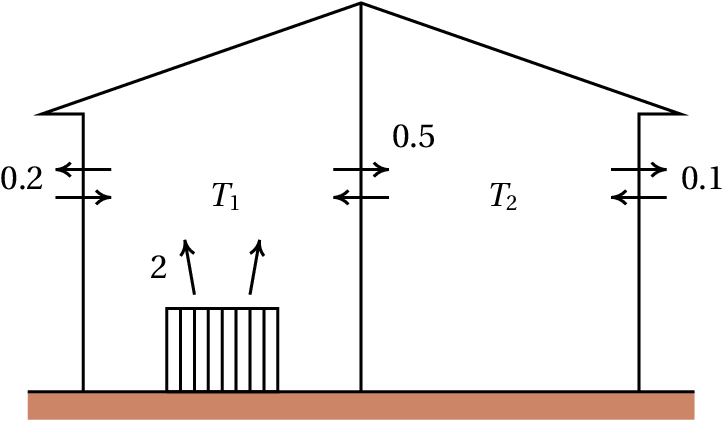
Resolution. The right-hand sides of the two
differential equations define the phase velocity components
in phase space (
,
). The equilibrium points, where
the state of the system remains constant, are the points
where those components are zero. Using the
commandsolve of Maxima,
namely, the equilibrium temperatures of the two rooms are
15.06 °C and 13.88 °C.
To make the system linear, we move the coordinates origin
to the equilibrium point. This is achieved by defining two new
variables:
In terms of these new variables the evolution equations are
similar to the original equations, but without the constant
terms:
(9.4)
Figure 9.1 shows
the nullclines for
Example 9.1, which are the curves
where each component of the phase velocity is zero. In the
nullcline for
, the derivative
is zero and
therefore, if the initial state was a point on this line,
the temperature
would remain constant at that initial
instant and the state would evolve in the direction parallel
to the
axis. If the initial state was in the nullcline
of
, the sate would evolve in the direction parallel to
the
axis. The equilibrium point lies at the
intersection of the two nullclines. In the region between
the two nullclines, the vectors in the figure show that the
phase velocity must point in the direction of the
equilibrium point and the state should approach the
equilibrium point; but what happens in the other regions?
does the system evolve towards the equilibrium pint too? A
general method for answering this question is introduced in
the next section.
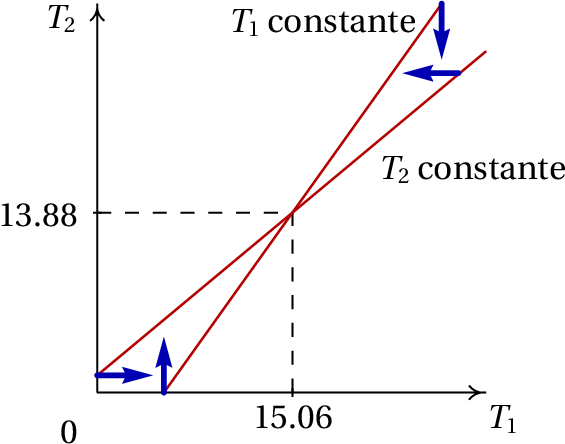
Figure 9.1: Nullclines and equilibrium
temperatures in Example 9.1.
When the evolution equations are obtained from a single
second order differential equation,
, the dynamic system is linear if the function
is a linear combination of
and
. In that case,
the matrix form of the system is the following
(9.5)
where
and
are two constants.
9.2. Stability of linear systems
In Example 9.1, if the
temperatures of each room reach the equilibrium values, they
will remain constant. But will the temperatures ever reach
those values? Or will it happen that as the temperature of
one of the rooms approaches its equilibrium value, the other
temperature moves away from its equilibrium value? Also, if
the initial temperatures are very close to their equilibrium
values, will they get even closer to the equilibrium or will
they get farther away from the equilibrium values?
In the systems discussed in Chapter 7, when the initial
state of the system is near an unstable equilibrium point,
the system may end moving to infinity, or depart initially
and then return to the initial point. If the initial state
is near a stable equilibrium point, the system
oscillates. In Example 9.1, if
there were cycles in phase space, it would be possible that
the two temperatures fluctuated indefinitely, without ever
stabilizing.
We are going to introduce a general method to analyze the
stability of linear systems, namely, their behavior in the
vicinity of the equilibrium points. The matrix
equation 9.3 can be interpreted
as the matrix representation of the vector equation:
(9.6)
where the position
and the velocity
of
the state are vectors in phase space and
is a
linear operator acting on vectors of phase space producing
other vectors in that space.
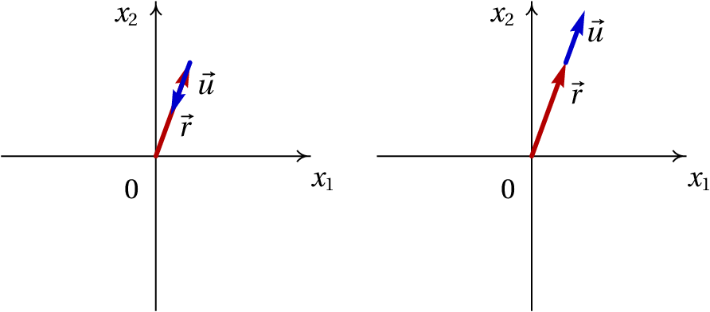
Figure 9.2: When the velocity is in the
direction of the position vector, the system approaches or
departs from the origin.
If at a given instant the phase velocity
and the
position vector in phase space,
, are in the same
direction, there are two possibilities as shown in
Figure 9.2: if the two vectors
are opposite, the state approaches the origin (equilibrium
point) and if they point to the same side, the state departs
from the origin. The condition for
and
to have the same direction is:
(9.7)
where
is a real number. If
is positive,
the system will move away from the equilibrium point and if
is negative, the system will approach the
equilibrium point. Substituting the previous expression into
equation 9.6 leads to:
(9.8)
The vectors
satisfying
equation 9.8 are
called eigenvectors of th eoperator
and the corresponding values
are the
operator's eigenvalues.
Example 9.2
Find the eigenvalues and eigenvectors of the linear
system of Example 9.1.
Resolution. Since the evolution equations have
already been stored in the variables eq1
and eq2, we can use the
command coefmatrix to obtain the system matrix
(equation 9.4):
(%i5)A: coefmatrix ([eq1,eq2],[T1,T2]);
(%o5)
which are the same 4 coefficients of the linear
combinations in equations 9.4. The
command eigenvectors of Maxima gives the
eigenvalues and eigenvectors of a matrix:
(%i6)eigenvectors (A)$ (%i7)float (%);
(%o7)
The first list shows the eigenvalues,
and
. The second list are the
"multiplicities" of each eigenvalue, which in this
case are both 1. The last two lists define the directions of
the eigenvectors corresponding to the two eigenvalues; any
vectors in the same direction of one of these two vectors,
is also eigenvector.
Since there are two negative eigenvalues, there are two
directions in the phase plane in which the state of the
system approaches the equilibrium state at the origin. We
can construct the phase portrait of the system
using plotdf:
The
syntax A[i]
is used to obtain the
th line of the matrix and the dot
indicates matrix
product. Figure 9.3 shows the
phase portrait.
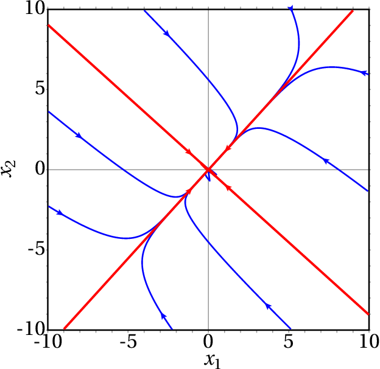
Figure 9.3: Phase portrait of
example 9.1. The two straight
lines are the directions of the two eigenvectors.
The directions of the two eigenvectors (the two lines) are
plotted by entering the coordinates of the eigenvectors
obtained in the result (%o7) into
the field "Trajectory at"" in the configuration
menu and then entering the same coordinates with opposite
signs. If the initial state is not on one of the directions
of the eigenvectors, the evolution curve approaches the
direction of the eigenvector with the smallest eigenvalue in
absolute value.
It should be noted that the two nullclines shown in
Figure 9.1 are on both sides of
the line with positive slope in
Figure 9.3 and intersect at the
origin, where the equilibrium point was displaced.
If the initial temperatures in the rooms were equal to the
outside temperature,
, then the initial
values of the variables
and
would be
8−15.06 and 8−13.88. The evolution curve in
phase space and the temperatures as a function of time can
be plotted with the following command:
The result is shown in Figure 9.4.
The plots of the time functions show that after 30 hours,
the two temperatures reach practically the equilibrium
values.
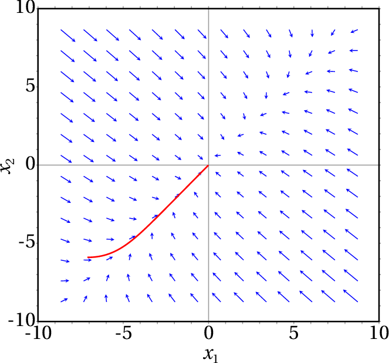
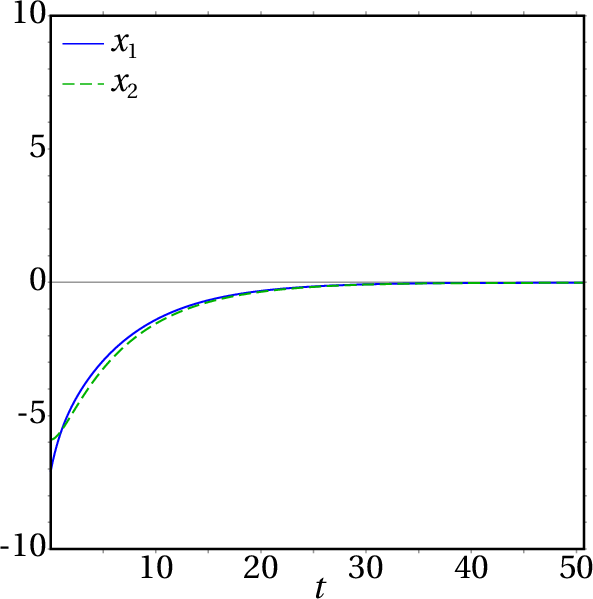
Figure 9.4: Evolution curve and
temperatures as a function of time, when the two initial
temperatures are 8 °C.
9.3. Classification of equilibrium points
The general form of a linear dynamical system, with any
state variables, is:
(9.9)
where
is the state of the system in a vector
space with
dimensions and
is a linear
operator in that space. In a phase space with two state
variables
and
, the matrix representation of
equation 9.9 is
equation 9.3.
If the determinant of the matrix
is nonzero, there is a single equilibrium point
at the origin:
. The existence of
eigenvalues of matrix
implies the existence of
directions in which the state approaches or departs in a
straight line from the equilibrium point. The eigenvalues of
matrix
are the numbers
that satisfy
equation 9.8. In a phase space
with two variables, this equation leads to:
(9.10)
That determinant leads to the following quadratic equation,
called characteristic equation :
(9.11)
where
is
the trace of the matrix and
its determinant. The two roots
of the characteristic equation are:
(9.12)
If the roots are complex numbers, it means that there are
no eigenvectors in the phase plane (
,
). If there
is a single real root, there will be at least one
eigenvector and if there are two different real roots, there
will be two independent vectors linearly independent in
phase space.
9.3.1. Saddle point
When the determinant
is negative, the
expression inside the square root in
equation 9.12 is positive
and
(9.13)
This implies that there are two real eigenvalues,
and
, one positive and the other
negative.
These two eigenvalues correspond to two linearly
independent eigenvectors, which define two directions in
the phase plane where the system evolves along a straight
line (see Figure 9.5). In the
direction corresponding to the negative eigenvalue, the
negative sign implies that there are two evolution curves
which are straight lines approaching the origin. In the
direction associated to the positive eigenvalue, the
positive sign implies two evolution curves which are
straight lines moving away from the origin.
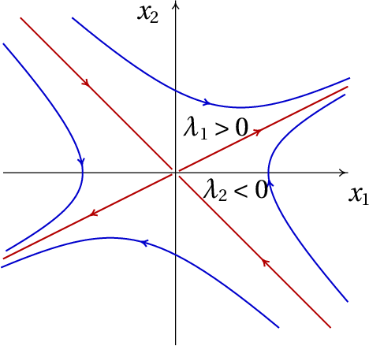
Figure 9.5: Saddle point: there are two
directions where the state evolves in a straight line,
moving away from the origin in one case and approaching
the origin in the other case.
The other evolution curves of the system are curves that
approach the origin for some time, but always end up
moving away to infinity
(Figure 9.5). This type of
equilibrium point is
called saddle point. Saddle points
are unstable equilibrium points.
Notice that even though there are two evolution curves
that start on the saddle point and two evolution curves
that approach it, there can be no homoclinic orbits
starting and ending at that point, because those evolution
curves are straight lines that extend to infinity. Linear
systems can never have homoclinic orbits. They never have
heteroclinic orbits either, because there should be two
ore more equilibrium points in a heteroclinic orbit, but
linear systems have only one equilibrium point.
9.3.2. Stable and unstable node
When the determinant
is positive but
less than
, there are two
real solutions of
equation 9.12 both with the
same sign of
.
If the two eigenvalues are negative, there are two
directions in the phase space in which the state
approaches the equilibrium point (left side of
Figure 9.6). Due to the
continuity of the evolution curves, any other evolution
curve will be a curve approaching the equilibrium
point. The equilibrium point in this case is called
a stable node or attractive
node.
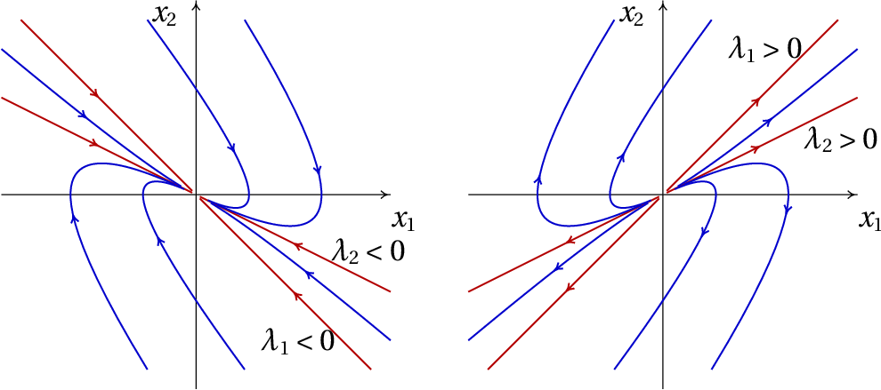
Figure 9.6: When the system matrix has
two real eigenvalues with the same sign, the equilibrium
point is a node, either stable (left) or unstable
(right).
If the two eigenvalues are positive, there are two
directions in phase space where the state moves away from
the equilibrium point. Whatever the initial state, the
system always moves away from the equilibrium point (right
side of Figure 9.6) and the
point is called
an unstable node or repulsive
node.
9.3.3. Focus and center
When the determinant
is greater than
, the two solutions in
equation 9.12 are complex
numbers
. This means that
there are no straight-line evolution curves. All evolution
curves are curved.
The sign of the real part of the complex solutions of
equation 9.12 determines
whether the evolution curves approach the equilibrium
point or move away from it. If the real part of the roots
is negative (matrix with negative trace), the evolution
curves are spirals that approach the equilibrium point, as
in the leftand side of
figure 9.7 and the equilibrium
point is called stable focus or attractive
focus.
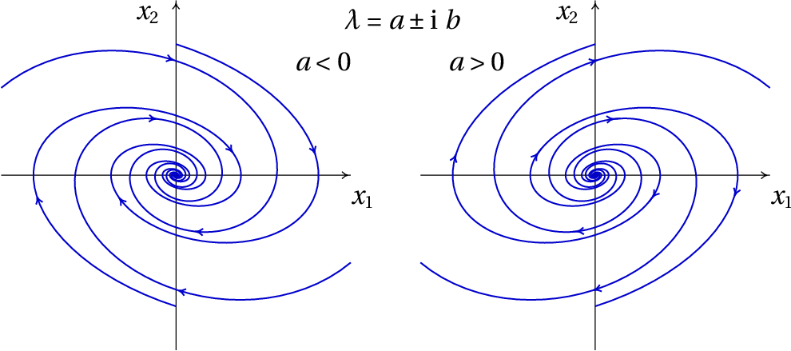
Figure 9.7: When the eigenvalues are
complex, the equilibrium point is a focus, either stable
(left) or unstable (right).
If the real part of the roots is positive (matrix with
positive trace), the evolution curves are spirals moving
away from the equilibrium point, as in the right-hand side
of Figure 9.7) and the
equilibrium point is called unstable focus or
repulsive focus.
If the trace of the matrix is zero, the solutions of
equation 9.12 are two purely
imaginary numbers, with the same imaginary part but with
opposite signs. In that case all evolution curves are
cycles; the of equilibrium point is stable and it is
called center.
Figure 9.8 shows a summary of
the different types of equilibrium points, in terms of the
trace and the determinant of the system matrix.
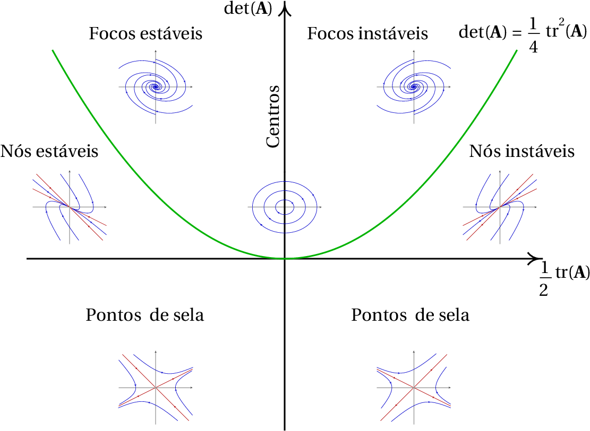
Figure 9.8: Types of equilibrium points
of a linear dynamical system with two state
variables.
9.3.4. Proper and improper node
When the determinant
is equal to
, which corresponds to the
points in the parabola in
figure 9.8, there is only a
real eigenvalue.
In that case the equilibrium point may be either one of
two types. If the matrix is diagonal, the two elements in
the diagonal are both equal to the eigenvalue and any
vector in phase space is an eigenvector of the
matrix. This implies that all evolution curves are
straight lines, starting at the origin if the eigenvalue
is positive, as in the left-hand side of
figure 9.9, or ending at the
origin if the eigenvalue is negative. The equilibrium
point is
called proper node; it is either
stable or unstable, depending on the sign of the
eigenvalue.
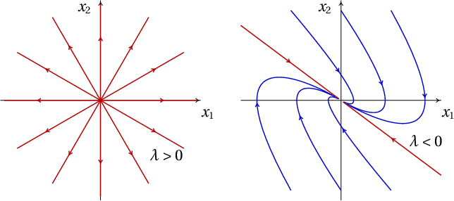
Figure 9.9: Phase portraits with an
unstable proper node (left) and a stable improper node
(right).
In the second case, when the matrix is not diagonal,
there is only one straight-line in the phase portrait and
the equilibrium point is
called improper node. If the
eigenvalue is negative, the improper node is stable, as in
the right-hand side of
Figure 9.9) and if the
eigenvalue is positive the equilibrium point is an
unstable improper node. If the improper node is unstable,
the evolution curves start from the origin in two opposite
directions; the curves starting in one of the directions
curve to one side and the others curve in to the other
side. If the improper node is stable, the evolution curves
have a similar shape but in evolve in the opposite
direction.
A convenient way to identify type of equilibrium of a
linear system is as follows: if the matrix is diagonal,
the diagonal elements are the eigenvalues. If the two
eigenvalues in the diagonal are equal, the point is a
proper node, unstable if the eigenvalue is positive or
stable if the eigenvalue is negative; in this case any
vector in phase space is an eigenvector.
If the matrix is not diagonal, we write its
characteristic equation 9.11
and find the
eigenvalues. Table 9.1 can the
be used to classify the equilibrium point, according to
the type of eigenvalues found.
Table 9.1: Classification of the
equilibrium points of linear systems.
Eigenvalues λ
Type of point
Stability
2 real numbers with opposite signs
saddle point
unstable
2 real positive numbers
repulsive node
unstable
2 real negative numbers
attractive node
stable
2 complex numbers with positive real part
repulsive focus
unstable
2 complex numbers with negative real part
attractive focus
stable
2 imaginary numbers
center
stable
1 real positive number
repulsive improper node
unstable
1 real negative number
attractive improper node
stable
x
9.3.5. Conservative linear systems
When a system is linear and conservative, the
condition 7.14
that the divergence is null implies, using the notation of
equations 9.2,
(9.14)
namely, the trace of the system matrix,
, is equal to zero, and we can
conclude from Figure 9.8, that
the equilibrium point at the origin must be a center, if
it is stable, or a saddle point, if it is
unstable. Conservative linear systems never have nodes or
foci.
9.4. Linear Oscillators
In mechanical systems with a single degree of freedom
,
when the equation of motion is a linear combination of
and
, it leads to a linear dynamical system. Therefore,
the equation of motion of linear conservative systems has
the general form:
(9.15)
where
and
are constants. The term
is
the tangential component of the conservative force, divided
by the mass
; and the term
is the tangential
component of the non-conservative force, divided by
.
Example 9.3
An inverted oscillator is a
system with equation of motion:
, where
is a positive constant. Analyze the stability of the
system and plot the phase portrait in some system of units
that make
.
Resolution. The state variables are
and
and
the matrix form of the evolution equations
(equation 9.5) is:
The trace of the matrix is null and its determinant is
equal to
, which is negative. Thus, the characteristic
equation is
and the eigenvalues are
and
. According to
table 9.1, the equilibrium
point at the origin is a saddle point (unstable).
The phase portrait for
can be done with the
command:
(%i11)plotdf ([v, s], [s, v])$
Figure 9.10 shows the graph
obtained after tracing some trajectories.
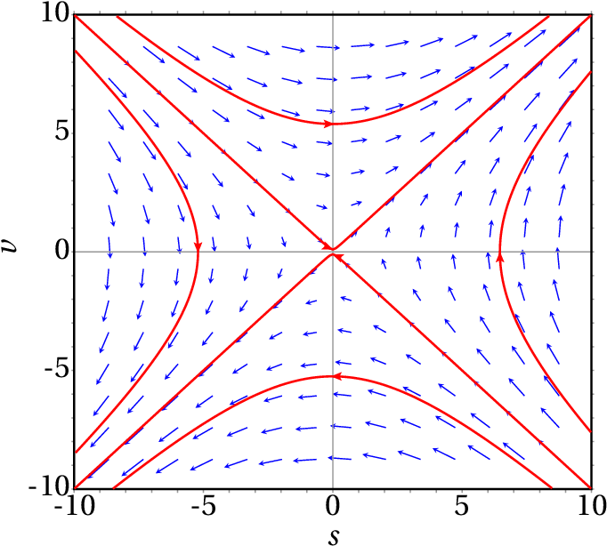
Figure 9.10: Phase portrait of an inverted oscillator.
Example 9.4
Analyze the stability and evolution curves of a simple
harmonic oscillator.
Resolution. The simple harmonic oscillator was
discussed in section
6.4, where its equation of motion was derived
(equation 6.31
):
where
is a positive constant.
Therefore, the matrix form of the system is:
The trace of the matrix is zero and its determinant is
,
which is positive. Consequently, the eigenvalues are two
purely imaginary numbers:
and the equilibrium point is a center.
Figure 9.11: The evolution curves of a simple
harmonic oscillator are all cycles.
If the initial state of the oscillator is the equilibrium
state,
, it will remain at rest; otherwise, the
evolution curve will be an ellipse
(Figure 9.11), which
corresponds to a simple harmonic motion with angular
frequency
. That is, whenever the
eigenvalues of a linear system of two variables are purely
imaginary, the system is a simple harmonic oscillator, with
angular frequency
equal to the modulus of the
eigenvalues,
|. In the case of a body of mass
attached to a spring with elastic constant
, the
constant
is
and the angular frequency is
.
9.4.1. Damped oscillators
The simple harmonic oscillator of
Example 9.4 is an idealized
system, since in practice there
are dissipative
forces. An example is the suspension system in an
car (Figure 9.12). Each wheel
is attached to the body by means of an elastic spring;
inside each spring there is a cylinder (shock absorber)
with a piston that moves in oil.
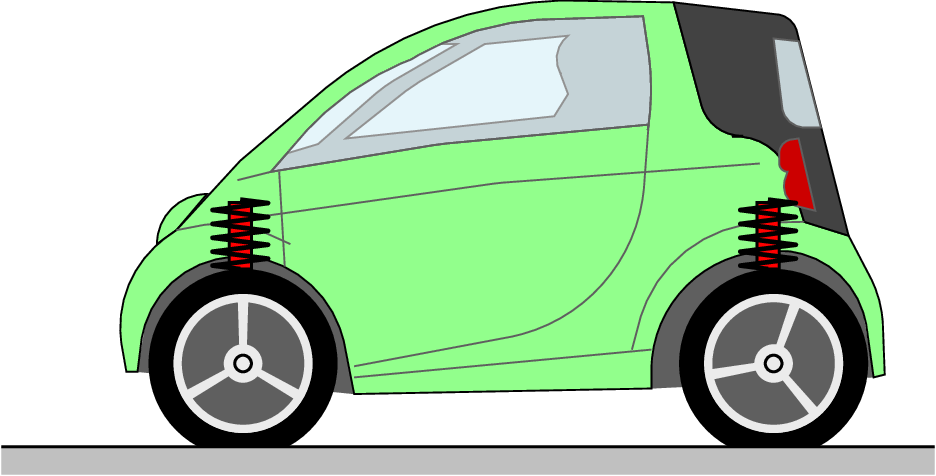
Figure 9.12: Suspension system of a car.
Let
be the height of the point of the body where the
spring is supported, measured from the equilibrium
position
; the total vertical force exerted by the
shock absorber on the body is:
(9.16)
where
and
are positive constants;
is the
spring's spring constant and
depends on the size of
the piston and the viscosity coefficient of the oil inside
the cylinder.
This force leads to the following linear system:
(9.17)
where
is the angular frequency,
, and
equals
.
The trace of the system matrix is
, negative,
and the determinant is
, positive. Thus, the
eigenvalues are either negative real numbers or complex
numbers with negative real part. This implies that the
system is always stable, eventually ending at the
equilibrium state
and
.
However, the way the system approaches the equilibrium
point will depend on the type of point. The damping is
called weak
when,
(9.18)
and in that case the eigenvalues are complex; the system
matrix is in the region of stable foci in
Figure 9.8. The evolution of
as a function of time is an oscillatory function with
decreasing amplitude, as shown in
Figure 9.13.
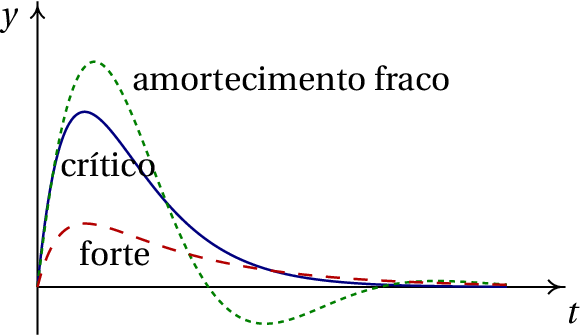
Figure 9.13: Variation of height
as a
function of time, for the three types of damping.
In the case when:
(9.19)
we say that there is critical damping. In this case
there is a single real eigenvalue. Since the matrix is not
diagonal, the equilibrium point is a stable improper
node. The evolution of
in terms of
is shown in
Figure 9.13.
Finally, the damping is called strong if:
(9.20)
there are two different negative eigenvalues. The
equilibrium point is a stable node and
approaches the
equilibrium point faster than in the other two cases
(Figure 9.13).
The suspension system should ensure that the car
approaches the equilibrium immediately, without
oscillations which could have bad consequences for the car
stability. Thus, the shock absorbers should provide strong
damping, making the equilibrium point a node.
After some use, dirt and the impurities in the shock
absorber's oil reduce its viscosity diminishes; some oil
might also leak out. These factors reduce the value of the
constant
below its critical value. If, by pushing
the car body down, the car swings slightly, it is time to
replace the shock absorbers.
Questions
(To check your answer, click on it.)
What's the number of dimensions in the phase space of a
single harmonic oscillator in three dimensions
?
1
2
3
4
6
The eigenvalues of a simple harmonic oscillator are
and
(in SI
units). Calculate the period of oscillation in seconds.
If
is the tangential component of the
total force on a particle,
is its position along its
trajectory and
its velocity, which of the following
expressions leads to a linear system?
The phase space of a system is the plane
. Which of the following could be the
differential equation associated to that system?
The matrix of a second-order linear system has trace
equal to 4 and determinant equal to 3. What kind of
equilibrium point is the origin?
unstable node
stable node
saddle point
unstable focus
stable focus
Problems
In each case, use Maxima to find the
eigenvalues and eigenvectors of the system. Conclude what
kind of equilibrium point the system has and plot its
phase portrait.
(a)
(b)
(c)
The figure shows the hypothetical
evolution curve of a free falling ball that bounces up on
the floor without any dissipation of energy. The part of
the plot at positive values of
corresponds to the
vertical motion of a projectile, neglecting the air
resistance. The part of the plot at negative values of
corresponds to the elastic deformation of the ball while
it is in contact with the floor, assuming that it is a
simple harmonic oscillator without any energy dissipation.
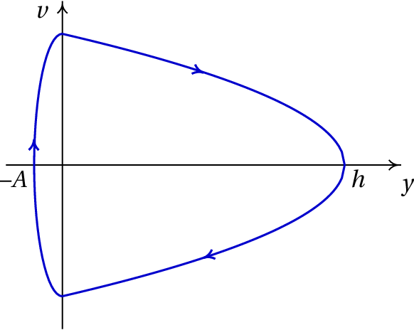
Being the maximum height reached by the ball
m and the maximum deformation of the ball on the floor
cm, compute:
(a) The maximum velocity of the ball along its motion.
(b) The angular frequency of the elastic deformation of
the ball.
(c) The time the ball remains in contact with the
floor.
A block with mass
kg lying on
a horizontal table is linked to an elastic spring of
constant
N/m (
is the position where the
spring is neither compressed nor stretched). The
coefficient of kinetic friction between the block and the
table is
.
(a) Plot the phase portrait and the evolution curves for
the initial positions
m and
m, with initial velocity
m/s.
(b) Based on the phase portrait in the previous item,
identify the position of the equilibrium points of the
system.
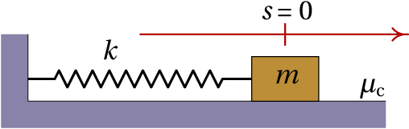
A cylinder of mass
is hung vertically
from a spring with elastic constant
, as in
figure 6.2. In
term of the height
of the center of mass of the
cylinder, from the position where the spring is neither
stretched nor compressed, and neglecting air resistance:
(a) Find the equation of motion, either from
Lagrange's equation or Newton's second law.
(b) Find the value of
at the equilibrium point.
(c) Show that the system can be written as a linear
dynamical system with a change of variable from
to a new variable
and that the equation of
motion in terms of
is the equation of a simple
harmonic oscillator with angular frequency
.
A cylinder has a circular base of area
cm2, height
cm and
density
g/cm3. Since its
density is lower than that of water,
g/cm3, when the cylinder floats at
the surface when placed in a container filled with water,
with a part
of its height outside the water, as shown
in the figure (
). If the cylinder is given a
small vertical boost, it starts to oscillate with
changing as a function of time. Use the following
procedure to analyze the oscillation of the cylinder:
(a) Considering that the buoyancy force in the cylinder equals the
weight of the water displaced by the cylinder,
namely,
find the expression for the total force on the
cylinder as a function of
(the resistance of the
water can be neglected, since it is much smaller than
the weight and buoyancy force).
(b) Find the equation of motion of the cylinder
(expression for
in terms of
).
(c) Find the value of
in the equilibrium position of
the cylinder.
(d) Show that the oscillation of the cylinder is linear
dynamical system and find the system matrix.
(e) Show that the equilibrium point is a center,
consistent with the fact that the cylinder oscillates
and determine the oscillation period of the
cylinder.
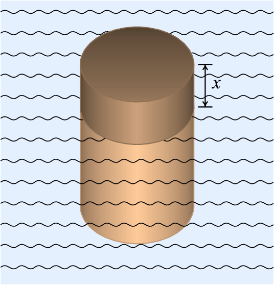
The equation of motion
, with
, describes an inverted
oscillator, with either energy dissipation (if
is
negative) or energy increase (if
is positive). Show
that
is a sufficient condition to ensure that
there are two different real eigenvalues with opposite
signs, regardless of the value of
. Therefore, the
equilibrium point is always a saddle.
A transformer has two coils, the primary
with resistance
and inductance
and the
secondary with resistance
and inductance
. When
a source is connected to the primary coil, producing
current
in it, a second current
is induced in
the secondary coil. When the source in the primary coil is
switched off, the two currents decrease gradually and their
intensities are given by the following equations:
where
is the mutual inductance between the two coils
and the constants
,
,
,
and
are
all positive.
(a) Write down the equations of the transformer as
evolution equations for a linear dynamical system and
find the system matrix.
(b) In an actual transformer,
is less than
. Find what kind o equilibrium point the
system has in the case
,
,
,
,
(in a system of units chosen to get
numbers between 0 and 10).
(c) Plot the phase portrait for the case considered in
the previous item.
(d) The values
,
,
,
and
, correspond to a hypothetical case which could
not describe a real transformer because
. Determine the kind of equilibrium
point that the system would have in this case and
argue why this system could not describe an actual
transformer.
A radioactive isotope A decays producing
another radioactive isotope B and this also decays
producing a stable isotope C.
Being
and
the number of isotopes of species A
and B at any instant
, their derivatives are given by
the following equations:
where
is the decay constant of isotope A
(probability that an A disintegrates during a unit of
time) and
is the decay constant of isotope B.
(a) Find the system matrix and its eigenvalues.
(b) Taking into account that the decay constants
and
are positive, describe the possible types of
equilibrium points for the possible values of the
decay constants.
(c) If at an initial instant the number of isotopes A, B
and C are respectively
,
and
,
where
is
Avogadro's number, what will be the values of
,
, and
after a very long
time?
For the dynamical system with evolution equations:
where
is a real parameter with any value between
and
, determine the intervals of values
of
where the equilibrium point (
) is a node or
a focus, attractive or repulsive, a center or a saddle
point.
Answers
Questions: 1. E. 2. E. 3.
B. 4. B. 5. A.
Problems
(a)
,
,
,
, saddle point.
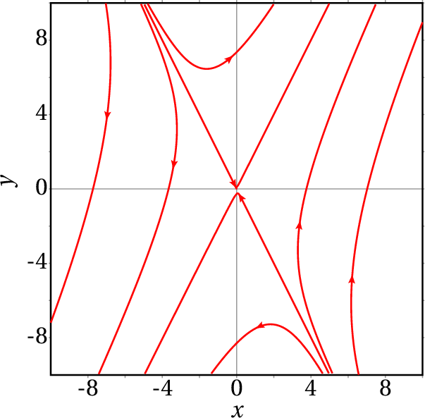
(b)
,
,
,
, stable node.
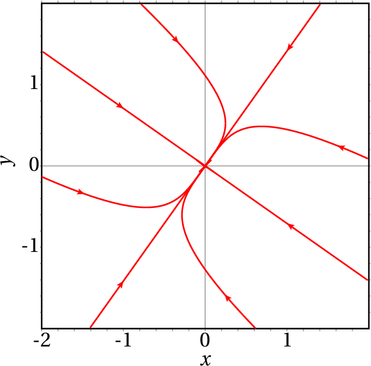
(c)
,
,
unstable improper node.
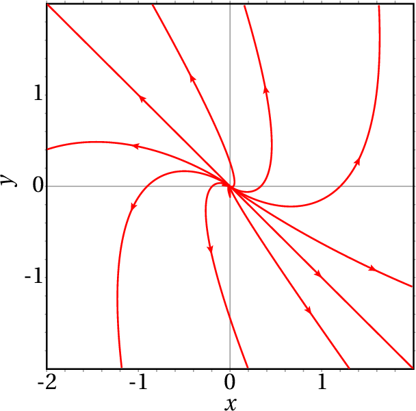
(a) 14 m/s (b) 1400 s
(c) 2.24 ms.
( b ) The only equilibrium point is at the
origin; however, at all points, different from the origin,
in the range
the system moves in
small "jumps" to the origin. This peculiar
behavior is due to numerical error; with sufficiently
small time intervals the block would continuously approach
the origin. In practice, there is also static friction,
which causes all points in the range
to be in fact equilibrium points (
).
(a)
(b)
(c ) The change of variable is
and the new equation of motion is
(gravity does not matter) and:
(a)
, in grams times
cm/s2,
in centimeters and assuming that
is positive when the force points upwards.
(b)
(c) 1.6 cm.
(d)
(e) The two eigenvalues are imaginary numbers. The
period is 0.762 seconds.
The two eigenvalues are
and
. Since
is always greater than zero, the two
values are always real. Since
is nonzero, the two eigenvalues are
different. The product of the two eigenvalues is
which, being negative, implies
that the two values have opposite signs.
(a)
The matrix is:
(b) Attractive node.
(c) The phase portrait is:
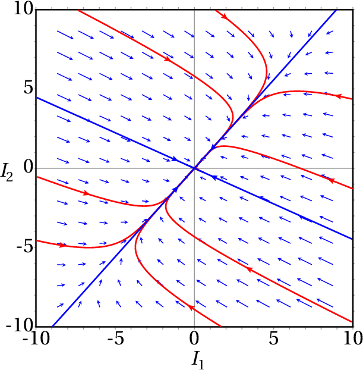
(d) Saddle point. It can not describe a real
transformer, because the instability of the system
implies that with finite initial currents the currents
would increase to infinity, which is not
possible.
(a) The matrix is:
with eigenvalues
and
.
(b) If the two constants are different, the equilibrium
point is an attractive node, if they are equal, it is
an attractive improper node.
(c)
,
and
.
If
, it is a saddle point. If
, it is an attractive node. If
, it is an attractive
focus. If
, it is a center. If
, it is a repulsive focus. And if
, it is a repulsive node.

(click to continue)